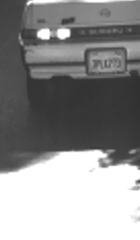

Super Resolution demo
This sample demonstrates Super Resolution algorithms for video sequence.
Sources:
Super Resolution algorithm (runs on CPU)
superRes = cv.SuperResolution('BTVL1'); superRes.Scale = 4; % Scale factor superRes.Iterations = 10; % Iteration count superRes.TemporalAreaRadius = 4; % Radius of the temporal search area
Optical Flow algorithm (Farneback or TV-L1)
if true superRes.setOpticalFlow('FarnebackOpticalFlow'); else superRes.setOpticalFlow('DualTVL1OpticalFlow'); end
Input video
inputVideoName = fullfile(mexopencv.root(),'test','car.avi'); if exist(inputVideoName, 'file') ~= 2 % download video from Github url = 'https://cdn.rawgit.com/opencv/opencv_extra/3.2.0/testdata/superres/car.avi'; disp('Downloading video...') urlwrite(url, inputVideoName); end superRes.setInput('Video', inputVideoName); % get video info cap = cv.VideoCapture(inputVideoName); fprintf('Size = %dx%d\n', cap.FrameWidth, cap.FrameHeight); fprintf('NumFrames = %d\n', cap.FrameCount); clear cap
Size = 72x121 NumFrames = 64
Output video
outputVideoName = [tempname() '.avi'];
writer = cv.VideoWriter();Set up display window, and start loop
hFig = figure('Name', 'Super Resolution', 'NumberTitle','off', ... 'Menubar','none', 'KeyPressFcn',@(o,e)setappdata(o, 'flag',true)); setappdata(hFig, 'flag',false); i = 0; while true % get next frame i = i + 1; fprintf('[%3d] : ', i); tic, frame = superRes.nextFrame('FlipChannels',true); toc if isempty(frame), break; end sz = size(frame); % write it to output video if ~writer.isOpened() writer.open(outputVideoName, [sz(2) sz(1)], ... 'FourCC','XVID', 'FPS',25); end writer.write(frame); % display it if i == 1 set(hFig, 'Position',[200 200 sz(2) sz(1)]); if mexopencv.isOctave() %HACK: not all IMSHOW options are implemented in Octave hImg = imshow(frame); else movegui(hFig, 'center'); hImg = imshow(frame, 'InitialMagnification',100, 'Border','tight'); end else set(hImg, 'CData',frame); end %title(num2str(i)) % Terminate if any user input flag = getappdata(hFig, 'flag'); if isempty(flag)||flag, break; end drawnow; end
[ 1] : Elapsed time is 2.232655 seconds. [ 2] : Elapsed time is 0.370143 seconds. [ 3] : Elapsed time is 0.370444 seconds. [ 4] : Elapsed time is 0.363539 seconds. [ 5] : Elapsed time is 0.370904 seconds. [ 6] : Elapsed time is 0.364186 seconds. [ 7] : Elapsed time is 0.364317 seconds. [ 8] : Elapsed time is 0.361977 seconds. [ 9] : Elapsed time is 0.364746 seconds. [ 10] : Elapsed time is 0.364923 seconds. [ 11] : Elapsed time is 0.363620 seconds. [ 12] : Elapsed time is 0.362444 seconds. [ 13] : Elapsed time is 0.364447 seconds. [ 14] : Elapsed time is 0.365299 seconds. [ 15] : Elapsed time is 0.364396 seconds. [ 16] : Elapsed time is 0.365240 seconds. [ 17] : Elapsed time is 0.363719 seconds. [ 18] : Elapsed time is 0.364684 seconds. [ 19] : Elapsed time is 0.365679 seconds. [ 20] : Elapsed time is 0.361244 seconds. [ 21] : Elapsed time is 0.364105 seconds. [ 22] : Elapsed time is 0.365622 seconds. [ 23] : Elapsed time is 0.366550 seconds. [ 24] : Elapsed time is 0.364822 seconds. [ 25] : Elapsed time is 0.368033 seconds. [ 26] : Elapsed time is 0.364694 seconds. [ 27] : Elapsed time is 0.364989 seconds. [ 28] : Elapsed time is 0.361693 seconds. [ 29] : Elapsed time is 0.364581 seconds. [ 30] : Elapsed time is 0.367004 seconds. [ 31] : Elapsed time is 0.367655 seconds. [ 32] : Elapsed time is 0.363765 seconds. [ 33] : Elapsed time is 0.365305 seconds. [ 34] : Elapsed time is 0.363782 seconds. [ 35] : Elapsed time is 0.364099 seconds. [ 36] : Elapsed time is 0.363278 seconds. [ 37] : Elapsed time is 0.363640 seconds. [ 38] : Elapsed time is 0.364189 seconds. [ 39] : Elapsed time is 0.362557 seconds. [ 40] : Elapsed time is 0.362383 seconds. [ 41] : Elapsed time is 0.365387 seconds. [ 42] : Elapsed time is 0.366201 seconds. [ 43] : Elapsed time is 0.361520 seconds. [ 44] : Elapsed time is 0.363196 seconds. [ 45] : Elapsed time is 0.362618 seconds. [ 46] : Elapsed time is 0.362849 seconds. [ 47] : Elapsed time is 0.362154 seconds. [ 48] : Elapsed time is 0.364958 seconds. [ 49] : Elapsed time is 0.364817 seconds. [ 50] : Elapsed time is 0.361525 seconds. [ 51] : Elapsed time is 0.361425 seconds. [ 52] : Elapsed time is 0.362579 seconds. [ 53] : Elapsed time is 0.367370 seconds. [ 54] : Elapsed time is 0.363292 seconds. [ 55] : Elapsed time is 0.364003 seconds. [ 56] : Elapsed time is 0.324977 seconds. [ 57] : Elapsed time is 0.296477 seconds. [ 58] : Elapsed time is 0.267468 seconds. [ 59] : Elapsed time is 0.239471 seconds. [ 60] : Elapsed time is 0.005846 seconds. [ 61] : Elapsed time is 0.005867 seconds. [ 62] : Elapsed time is 0.005852 seconds. [ 63] : Elapsed time is 0.005849 seconds. [ 64] : Elapsed time is 0.005869 seconds. [ 65] : Elapsed time is 0.002012 seconds.
release output video, and open it in external player
writer.release(); if ispc() && ~mexopencv.isOctave() %HACK: WINOPEN not implemented in Octave winopen(outputVideoName) end